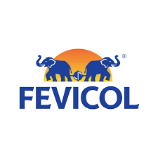
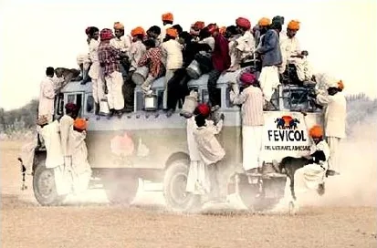
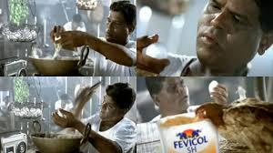

How India's adhesive giant built unbreakable brand recall through visual storytelling, humor, and a single powerful idea — the bond.

Fevicol is one of India's most iconic brands and a masterclass in creative marketing. In a category where most adhesive brands focus only on product features, Fevicol built an emotional connection with audiences through storytelling, humor, and unforgettable visual campaigns.
This case study explores the top 2 most successful Fevicol ads — the Bus Campaign and the Egg Campaign — with deep marketing strategy analysis, brand positioning insights, and performance ratings.
The real success behind Fevicol's advertising lies in its positioning strategy: Fevicol did not sell adhesive as a technical product. Instead, it sold a simple, memorable idea — strength of bond. This is a classic example of consumer-friendly brand communication where a single concept becomes synonymous with the brand.
The Fevicol Bus campaign is widely regarded as one of the best Indian advertising campaigns of all time. The advertisement shows an overcrowded bus carrying people from every possible angle — yet everyone remains firmly attached despite rough roads and extreme movement.
What makes this campaign highly successful is its ability to demonstrate product strength without directly explaining technical features. Instead of talking about adhesive quality, the campaign uses a memorable real-life scenario that instantly connects with the Indian audience.
"The campaign successfully created top-of-mind brand recall and transformed the phrase 'Fevicol ka jod' into a cultural expression used in everyday conversation."
The campaign's core marketing objective was to establish Fevicol as the strongest and most trusted adhesive brand in India. It achieved this not through feature-heavy communication, but through humor, exaggeration, and deep cultural relatability — a benchmark in brand recall marketing strategy.

The Fevicol Egg campaign is a powerful example of symbolic marketing. The strategy uses the egg as a metaphor for fragility and contrast. Since an egg naturally represents something delicate and easily breakable, using it in the campaign amplified Fevicol's message of superior bonding strength.
The strategy behind this campaign was psychological. By connecting a fragile object with the concept of durability, the brand strengthened consumer trust and reinforced its core positioning through contrast marketing strategy and product symbolism.
"The most fragile object becomes the strongest symbol. Contrast is one of the most powerful psychological triggers in brand communication."
The campaign maintained messaging consistency with the Bus campaign by continuing to focus on the same brand promise: strong bond and long-lasting trust. This consistency is one of the biggest reasons Fevicol achieved long-term category leadership across generations.

Every campaign circles back to one idea: strength of bond. This single concept made Fevicol synonymous with bonding — a category-owning mental shortcut.
The Bus campaign used exaggerated real-life scenarios that every Indian could relate to. Humor created shareability and earned attention without paid virality.
The Egg campaign demonstrated how a well-chosen symbol can communicate complex product benefits — fragility vs. strength — in a single visual frame.
Decades of consistent messaging built category-defining trust. Consumers don't choose adhesive — they choose Fevicol. That's brand equity at work.
The phrase "Fevicol ka jod" entered everyday Indian vocabulary. When a brand's name becomes a common expression, it has achieved the highest level of recall.
Fevicol didn't just win market share — it owned the entire category concept. Consumers think of "bond" and Fevicol comes to mind. No other brand occupies that space.
Fevicol's Bus and Egg campaigns are among the best examples of creative marketing strategy in India. Both campaigns successfully combined humor, relatability, and storytelling to create a powerful brand identity.
These campaigns did not just increase awareness — they helped Fevicol own an entire idea in the customer's mind. When a brand name becomes the generic name for a category, that is the ultimate achievement in marketing.
For businesses, startups, and marketers, Fevicol remains one of the strongest case studies in long-term brand building, emotional storytelling, and category leadership through simplicity.
At Brand Business Talk, we help brands with research, strategy, market insights, and growth recommendations. Let's build your brand growth strategy together.